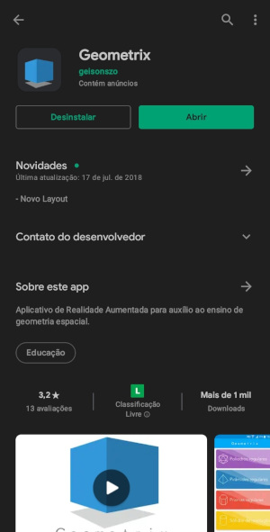
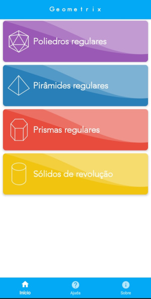
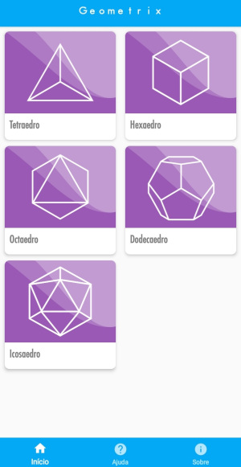

Sobre o projeto
Escolas, principalmente públicas, normalmente utilizam métodos tradicionais e às vezes lúdicos, mas que infelizmente nem sempre são eficazes, devido a isso o grupo desenvolveu uma Plataforma de Auxílio a Imaginação(P.A.I.), essa plataforma busca informar sobre a afantasia e trazer informações sobre como utilizar o aplicativo Geometria RA. Objetivo: Levar a tecnologia para as salas de aula de modo benéfico e produtivo, de forma que auxilie os alunos que tenham dificuldades de aprendizado em relação à geometria espacial ou outras matérias de exatas, que exijam a visualização de algum objeto tridimensional, utilizado da realidade virtual e aumentada. Métodos: Em primeira análise se fez necessária uma pesquisa sobre as principais dificuldades encontradas pelos alunos em sala de aula e assim buscar o desenvolvimento de uma plataforma que busque ajudar na solução desses problemas, dessa pesquisa participaram cerca de 20 alunos do IFMS. Com base em algumas respostas da pesquisa e uma listagem, feita por Tommy Dreyfus em 2002, sobre dificuldades encontradas pelos alunos, foi desenvolvido a plataforma “P.A.I.”.
O QUE É RA E VR?
Realidade aumentada (RA)
Realidade virtual(RA) Kirner e Siscoutto(2007) define a Realidade Aumentada como sendo
a
inserção de objetos
virtuais no ambiente físico, mostrada ao usuário, em tempo real, com o apoio de algum dispositivo
tecnológico, usando a interface do ambiente real, adaptada para visualizar e manipular os objetos reais
e
virtuais, visando melhorar a interação com o usuário e aumentar a sensação de realismo, diminuindo a
distância entre o real eo virtual.
Realidade virtual (VR)
A Realidade Virtual (RV) é um ambiente — gerado por meio de um computador — com cenas e objetos que parecem reais, fazendo com que os usuários se sintam imersos nessa realidade. Esse ambiente é percebido através de um óculos ou capacete de Realidade Virtual
Um pouco mais sobre realidade aumentada e realidade virtual na educação
O vídeo a baixo é uma entrevista do canal Conexão Futura, feita pelo Cristiano Reckziegel, onde os entrevistados são: Romero Tori, professor da USP e do Centro Universitário do SENAC; Bruno Duarte, gestor de Tecnologias Educacionais do SENAI; e Tatiana Klix, repórter do PORVIR. Nesta entrevista eles abordam o tema "Realidade aumentada na educação", assim debatendo as vantagens da utilização da RA e VR, em sala de aula.
Como usar o Geometrix
Primeiramente é importante ressaltar que o app do Geomtrix, está disponível para
download
apenas para celulares android, e para baixa-lo é muito simples. Após pesquisar sobre o app na "Play
Store" e
clicar sobre o ícone do Geometrix, a seguinte tela irá aparecer: 
Após a instalação do aplicativo e inicialação do mesmo, a tela da imagem a baixo será
apresentada, tal tela conterá as seguintes opções: poliedros regulares, pirâmides regulares, prismas
regulares, sólidos de revolução. O próximo passo conssiste em selecionar uma das opções. 
A tela apresentada no exemplo a baixo são as opções que aparecem ao clicar na opção
"Poliedros regulares". 
Ao escolher uma das opções você será apresentado a uma tela igual a da imagem a baixo.
Para realizar o download do marcador, que está em formato de PDF, basta apenas clicar aqui.